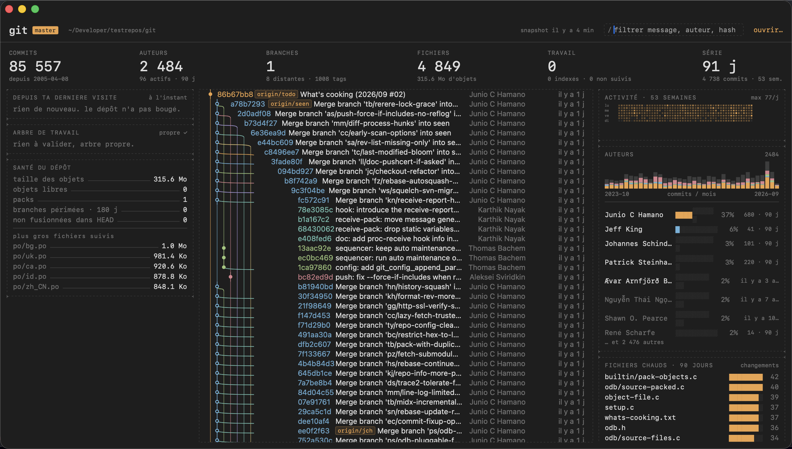

Lanes
macOS 15+ lecture seule MIT ENUn tableau de bord Git pour macOS, entièrement monospace, construit autour d'un budget : tout le dépôt à l'écran en moins de 400 ms à froid, avant que l'icône du Dock ait fini son premier rebond. Même sur git/git et ses 85 000 commits.
Télécharger pour Mac Code source sur GitHub

Signé Developer ID et notarisé par Apple. Apple Silicon, macOS 15 ou plus récent. git de Xcode ou des Command Line Tools.
Ce qu'il montre
Le graphe des commits avec ses voies, branches, tags et HEAD, virtualisé.
Tous tes dépôts dans un cadre : bascule au clic, ⌘1…⌘9, ⌘[ et ⌘].
Depuis ta dernière visite : commits, auteurs, fichiers touchés.
L'arbre de travail : modifié, indexé, non suivi. Ahead/behind et stashes dans l'en-tête.
Le détail du commit sélectionné et ses fichiers, lignes ajoutées et supprimées.
La santé du dépôt : taille, objets libres, branches périmées, plus gros fichiers.
L'activité sur 53 semaines, les auteurs et leur rivière mensuelle, les fichiers chauds, qui possède quoi.
Cloner (⌘⇧O) par URL, owner/repo ou mots-clés GitHub. Ouvrir dans le Finder, le Terminal, ton éditeur.
Comment c'est rapide
L'app ne lit jamais Git au lancement. Elle mappe en mémoire un snapshot binaire construit la fois précédente, dessine, puis vérifie en arrière-plan si le dépôt a changé et reconstruit si besoin. Pendant qu'elle est ouverte, FSEvents déclenche la même vérification.
Les modules autorisés sur le chemin critique n'ont pas accès à ceux qui font du travail lourd : faire attendre la première frame est une erreur de compilation, pas une régression.
Lecture seule : aucune commande qui modifie un dépôt, et GIT_OPTIONAL_LOCKS=0 pour ne pas même poser de verrou sur l'index.
Construire soi-même
git clone https://github.com/menufactory43/lanes cd lanes Scripts/build-app.sh # release → ~/Applications/Lanes.app swift test # 18 tests